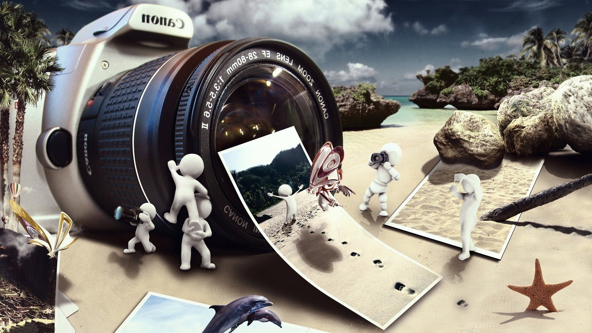

Welcome to Online Camera Store
 Canon digital camcorders have the innovation you need and the reliability you love in delivering superior image quality and performance. Featuring Genuine Canon Optics and Canon's advanced, proprietary video technologies, Canon's exciting line-up of high definition and standard definition camcorders continue to rate among the best in class. Whatever your application may be, there's a Canon camcorder designed to perfectly match your needs.